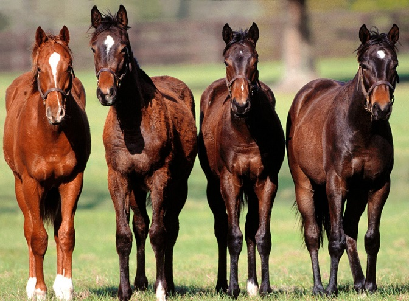

Лошадь - виды и породы

Человек приручил лошадей. В результате селекции возникло много пород. Цвет меха варьируется от белого до черного. Шерсть лошадей бывает красного, коричневого и желтого оттенка, и тело украшает широкий спектр рисунков. Лошади встречаются пегие и покрытые однотонными пятнами. Размер животного зависит от породы, варьируется от 227 до 900 кг по массе, в длину от 220 до 280 см и от 0,9 до 1,7 метра в высоту.
Описание лошади
У лошади копыта овальной формы, длинный хвост, короткая шерсть на теле, длинные стройные ноги, мускулистое и сильное туловище, вытянутая крепкая шея и большая продолговатая голова. Грива – это область грубых волосков, которая простирается вдоль дорсальной стороны шеи как у домашних, так и у диких видов. Лошади пасутся на траве. Для жевания растений у них во рту имеются сложные и постоянно растущие моляры. Толстая, зимняя шерсть развивается в сентябре-октябре, полностью вырастает к декабрю. Зимний мех ыначинает линять весной, а летом тело покрывает гладкая и тонкая шерсть.